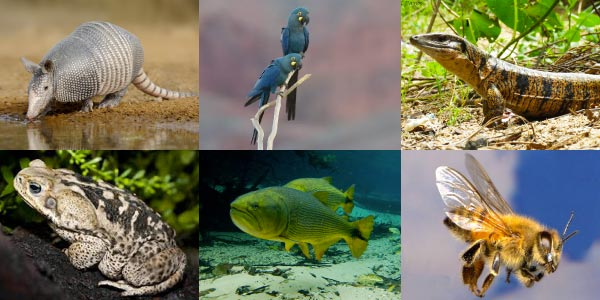
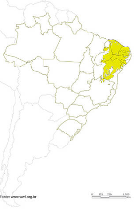

A Caatinga apresenta diversas particularidades, principalmente em relação à adaptação climática das plantas e animais. Esse bioma é afetado por secas extremas e períodos de estiagem, característicos do clima semiárido. Por essa razão, a vegetação precisou desenvolver mecanismos de sobrevivência em razão da pouca disponibilidade de água. A fauna é bastante diversificada e também é marcada pelas adaptações ao clima, como as recorrentes migrações nos períodos de estiagem. A Caatinga localiza-se na Região Nordeste do Brasil e compreende os estados da Paraíba, Rio Grande do Norte, Piauí, Maranhão, Alagoas, Pernambuco, Sergipe e Bahia. Também ocorre em algumas faixas da Região Sudeste que ficam ao norte do estado de Minas Gerais.
A fauna da Caatinga é bastante diversificada, mas não tão conhecida, havendo diversas espécies de animais endêmicos. Os animais que se encontram na região abrangida por esse bioma apresentam características de adaptação ao clima, assim como as plantas, como o desenvolvimento de hábitos noturnos, comportamentos migratórios e “hibernações" (capacidade de algumas espécies de lidar com condições climáticas hostis).
A região semiárida abrangida por esse bioma é a mais povoada do mundo, sendo habitat para cerca de 28 milhões de pessoas, que tiram do bioma os recursos necessários para a sua sobrevivência. Além dessa intensa exploração dos recursos naturais, há o aumento da expansão da fronteira agrícola para viabilizar a produção agrícola e pecuária, acarretando então o aumento do desmatamento. Segundo o Ibama, até 2008, o desmatamento na Caatinga chegava a 45%. Dados do MapBiomas (Sistema de Monitoramento dos Biomas do Brasil) apontam que a Caatinga perdeu aproximadamente 11 milhões de hectares entre 2000 e 2016.
.jpg)
A flora da Caatinga é bastante diversificada. O período de floração varia conforme a região, o regime de chuvas e a qualidade dos solos. Segundo a Embrapa, a Caatinga apresenta cerca de 1.981 espécies de plantas. Destacam-se os cactos, como o mandacaru e o xique-xique; as bromélias, como a macambira; e as leguminosas, como a catingueira. O clima que compreende a região da Caatinga é o tropical semiárido. Esse clima é marcado por longos períodos de estiagem, isto é, sem chuvas. O solo da Caatinga é definido, segundo o Sistema Brasileiro de Classificação dos Solos, como raso a profundo. É rico em minérios, mas pobre em matéria orgânica, em razão das características do clima, da hidrografia e da vegetação da região. As texturas são arenosas e argilosas.
